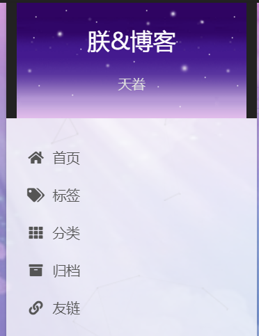

1.Next主题安装
$ cd hexo文件目录
$ git clone https://github.com/theme-next/hexo-theme-next themes/next
然后设置站点配置文件_config.yml:
theme: next
即可将我们的Hexo博客主题替换为Next主题。
2.主题风格
Next主题主要分为四种scheme，可以在主题文件的_config.yml文件中进行选择，分别是Muse、Mist、Pisces、Gemini；我选择的是Gemini风格
3.Next常规配置
- 个人信息配置
在站点的_config.yml文件中进行配置：
title: 朕&博客
subtitle: 天眷
escription: 技术随想
keywords:
author: 朕
language: zh-CN
timezone: - 头像配置
将头像放置在themes/next/source/images/中，然后在主题中打开_config.yml文件中进行配置：
avatar:
#In theme directory (source/images): /images/avatar.gif
#In site directory (source/uploads): /uploads/avatar.gif
#You can also use other linking images.
url: /images/avatar.png #将我们的头像图片放置在blog/themes/next/source/images目录下，填写具体地址
#If true, the avatar would be dispalyed in circle.
rounded: true #鼠标放在头像上时是否旋转
opacity: 1 #头像放缩指数
#If true, the avatar would be rotated with the cursor.(注意#号后的空格，上同)
rotated: true #头像是否设为圆形，否则为矩形 - 菜单栏配置
menu:
home: / || home
#about: /about/ || user
tags: /tags/ || tags
categories: /categories/ || th
archives: /archives/ || archive
#schedule: /schedule/ || calendar
#sitemap: /sitemap.xml || sitemap
#commonweal: /404/ || heartbeat
系统自动帮我们创建了home和archives页面，所以我们只需要使用终端创建tags和categories页面即可：
$ cd hexo文件目录
$ hexo new page “tages”
$ hexo new page “categories”
创建好的页面在站点sources中，我们需要对相关页面进行type修改：
title: 分类
date: 2023-01-09 14:14:50
type: “categories”
title: 标签
date: 2023-01-09 14:14:28
type: “tags”
4.添加搜索功能
1>安装 hexo-generator-searchdb 插件
$ cd 文件目录
$ npm install hexo-generator-searchdb –save
2>打开站点配置文件_config.yml,找到Extensions在下面添加:
#搜索(注意#号后空格)
search:
path: search.xml
field: post
format: html
limit: 10000
3>打开主题配置文件_config.yml,找到Local search，将enable设置为true.
5.自定义博客图标
博客的默认图标是H，需要将我们的图标放置在/themes/next/sources/images目录下，并在主题配置文件中进行如下配置，只需要设置small和medium两个就可以：
favicon:
small: /images/favicon-16x16-next.png
medium: /images/favicon-32x32-next.png
apple_touch_icon: /images/favicon-128x128-next.png
safari_pinned_tab: /images/logo.svg
6.添加点击效果
1>在/themes/next/source/js目录下，新建clicklove.js文件：
$ cd /themes/next/source/js
$ touch clicklove.js
2>将下面的代码粘贴进clicklove.js文件中：
!function(e,t,a){function n(){c(“.heart{width: 10px;height: 10px;position: fixed;background: #f00;transform: rotate(45deg);-webkit-transform: rotate(45deg);-moz-transform: rotate(45deg);}.heart:after,.heart:before{content: ‘’;width: inherit;height: inherit;background: inherit;border-radius: 50%;-webkit-border-radius: 50%;-moz-border-radius: 50%;position: fixed;}.heart:after{top: -5px;}.heart:before{left: -5px;}”),o(),r()}function r(){for(var e=0;e<d.length;e++)d[e].alpha<=0?(t.body.removeChild(d[e].el),d.splice(e,1)):(d[e].y–,d[e].scale+=.004,d[e].alpha-=.013,d[e].el.style.cssText=”left:”+d[e].x+”px;top:”+d[e].y+”px;opacity:”+d[e].alpha+”;transform:scale(“+d[e].scale+”,”+d[e].scale+”) rotate(45deg);background:”+d[e].color+”;z-index:99999”);requestAnimationFrame(r)}function o(){var t=”function”==typeof e.onclick&&e.onclick;e.onclick=function(e){t&&t(),i(e)}}function i(e){var a=t.createElement(“div”);a.className=”heart”,d.push({el:a,x:e.clientX-5,y:e.clientY-5,scale:1,alpha:1,color:s()}),t.body.appendChild(a)}function c(e){var a=t.createElement(“style”);a.type=”text/css”;try{a.appendChild(t.createTextNode(e))}catch(t){a.styleSheet.cssText=e}t.getElementsByTagName(“head”)[0].appendChild(a)}function s(){return”rgb(“+(255*Math.random())+”,”+(255*Math.random())+”,”+~~(255*Math.random())+”)”}var d=[];e.requestAnimationFrame=function(){return e.requestAnimationFrame||e.webkitRequestAnimationFrame||e.mozRequestAnimationFrame||e.oRequestAnimationFrame||e.msRequestAnimationFrame||function(e){setTimeout(e,1e3/60)}}(),n()}(window,document);
3>在\themes\next\layout_layout.swig文件末尾添加：
 4>效果如下：
4>效果如下：
7.添加动态背景
1>下载相应的资源包：
$ git clone https://github.com/theme-next/theme-next-canvas-nest themes/next/source/lib/canvas-nest
2>在主题配置中做相关参数修改：
#Canvas-nest(注意#号后空格，下同)
#Dependencies: https://github.com/theme-next/theme-next-canvas-nest
canvas_nest: # 网络背景
enable: true
onmobile: true # display on mobile or not
color: ‘0,0,0’ # RGB values, use ‘,’ to separate
opacity: 0.5 # the opacity of line: 0~1
zIndex: -1 # z-index property of the background
count: 150 # the number of lines
#JavaScript 3D library.
#Dependencies: https://github.com/theme-next/theme-next-three
#three_waves
three_waves: false
#canvas_lines
canvas_lines: false
#canvas_sphere
canvas_sphere: false
#Canvas-ribbon
#Dependencies: https://github.com/theme-next/theme-next-canvas-ribbon
#size: The width of the ribbon.
#alpha: The transparency of the ribbon.
#zIndex: The display level of the ribbon.
canvas_ribbon:
enable: false
size: 300
alpha: 0.6
zIndex: -1
3>效果如下:
8.添加更多按钮
因为在你的博客主页会有多篇文章，如果你想让你的文章只显示一部分，多余的可以点击阅读全文来查看，那么你需要在你的文章中添加,其后面的部分就不会显示了，只能点击阅读全文才能看。
9.自定义头部背景区域
1>将图片文件放在/themes/next/source/images中，打开/themes/next/source/css/_schemes/Pisces/_brand.styl,添加
background-image: url(/images/blogHead.jpg);
@media(min-width: 992px){
background-image: url(/images/blogHead.jpg);
}
2>效果如下：
10.添加背景，并设置页面透明度
- 进入 blog/themes/next/_config.yml
- 按住 ctrl + f 搜索 custom_file_path
按照提示修改配置： - 在blog/source/创建_custom/custom.styl
#背景图片，以及板块透明等操作
style: source/_custom/custom.styl - 向blog/source/_custom/custom.styl添加内容如下
// 设置背景图片
body {
// 使用网上动态变化的图片
// background:url(https://source.unsplash.com/random/1600x900); //这一行的括号里填背景图片的路径，将图片重命名为background.jpg放在\themes\next\source\images下
background-image:url(/images/background.png); //这一行的括号里填背景图片的路径，将图片重命名为background放在\themes\next7.7\source\images下
background-repeat: no-repeat;
background-attachment:fixed;
background-position:50% 50%;
background-size:100% 100%;
}
// 各板块设置透明度
// 侧边框的透明度设置
.content-wrap {
opacity: 0.75;
}
// 主板块
.main-inner {
background-color: rgba(255, 255, 255, 0);
}
// 主版块里的post板块(f12,cmd+shift+c找出)
.post-block {
opacity: 0.75;
}
// 侧边框的透明度设置
.sidebar {
opacity: 0.75;
}
// 菜单栏的透明度设置
.header-inner {
background: rgba(255, 255, 255, 0.75);
}
// 页码
.pagination {
opacity: 0.75;
}
// 搜索框（local-search）的透明度设置
.popup {
opacity: 0.75;
}
11.添加圆角
- 在source/_data/variables.styl中输入以下代码，注意，$并不是多余的
// 圆角设置
$border-radius-inner = 20px 20px 20px 20px;
$border-radius = 20px; - 然后在 NexT 的配置文件 _config.next.yml 中取消 variables.styl 的注释：
custom_file_path:
variable: source/_data/variables.styl